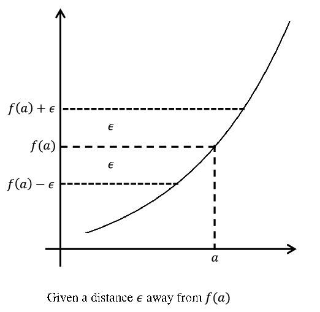
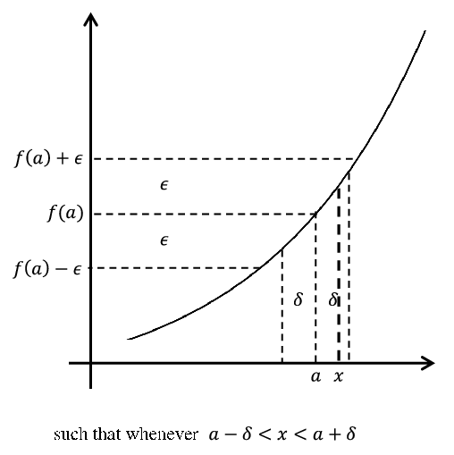

Before the invention of calculus, the notion of continuity was treated intuitively if it was treated at all. At first pass, it seems a very simple idea based solidly in our experience of the real world. Standing on the bank we see a river flow past us continuously, not by tiny jerks. Even when the flow might seem at first to be discontinuous, as when it drops precipitously over a cliff, a closer examination shows that it really is not. As the water approaches the cliff it speeds up. When it finally goes over it accelerates very quickly but no matter how fast it goes it moves continuously, moving from here to there by occupying every point in between. This is continuous motion. It never disappears over there and instantaneously reappears over here. That would be discontinuous motion.
Similarly, a thrown stone flies continuously (and smoothly) from release point to landing point, passing through each point in its path.
But wait.
If the stone passes through discrete points it must be doing so by teeny tiny little jerks, mustn’t it? Otherwise how would it get from one point to the next? Is it possible that motion in the real world, much like motion in a movie, is really composed of tiny jerks from one point to the next but that these tiny jerks are simply too small and too fast for our senses to detect?
If so, then the real world is more like the rational number line (\(\QQ\)) from Chapter 3 than the real number line (\(\RR\)). In that case, motion really consists of jumping discretely over the “missing” points (like \(\sqrt{2}\)) as we move from here to there. That may seem like a bizarre idea to you — it does to us as well — but the idea of continuous motion is equally bizarre. It’s just a little harder to see why.
The real world will be what it is regardless of what we believe it to be, but fortunately in mathematics we are not constrained to live in it. So we won’t even try. We will simply postulate that no such jerkiness exists; that all motion is continuous.
However we are constrained to live with the logical consequences of our assumptions, once they are made. These will lead us into some very deep waters indeed.
The intuitive treatment of continuity was maintained throughout the 1700’s as it was not generally perceived that a truly rigorous definition was necessary. Consider the following definition given by Euler in 1748.
A continuous curve is one such that its nature can be expressed by a single function of \(x.\) If a curve is of such a nature that for its various parts . . . different functions of \(x\) are required for its expression, . . . , then we call such a curve discontinuous.
However, the complexities associated with Fourier series and the types of functions that they represented caused mathematicians in the early \(1800\)s to rethink their notions of continuity. As we saw in Part II, the graph of the function defined by the Fourier series
This function went against Euler’s notion of what a continuous function should be. Here, an infinite sum of continuous cosine curves provided a single expression which resulted in a “discontinuous” curve. But as we’ve seen this didn’t happen with power series and an intuitive notion of continuity is inadequate to explain the difference. Even more perplexing is the following situation. Intuitively, one would think that a continuous curve should have a tangent line at at least one point. It may have a number of jagged points to it, but it should be “smooth” somewhere. An example of this would be \(f(x)=x^{2/3}\text{.}\) Its graph is given by
Figure9.1.2.
This function is not differentiable at the origin but it is differentiable everywhere else. One could certainly come up with examples of functions which fail to be differentiable at any number of points but, intuitively, it would be reasonable
Weierstrass showed that if \(a\) is an odd integer, \(b\in(0,1)\text{,}\) and \(ab>1+\frac{3}{2}\pi\text{,}\) then \(f\) is continuous everywhere, but is nowhere differentiable. Such a function is somewhat “fractal” in nature, and it is clear that a definition of continuity relying on intuition is inadequate to study it.
Problem9.1.5.
(a)
Given \(f(x)=\sum_{n=0}^\infty\left(\frac{1}{2}\right)^n\cos\left(a^n\pi
x\right)\text{,}\) what is the smallest value of \(a\) for which \(f\) satisfies Weierstrass’ criterion to be continuous and nowhere differentiable.
(b)
Let \(f(x,N)=\sum_{n=0}^N\left(\frac{1}{2}\right)^n\cos\left(13^n\pi
x\right)\) and use a computer algebra system to plot \(f(x,N)\) for \(N=0,1,2,3,4,10\) and \(x\in[0,1]\text{.}\)
(c)
Plot \(f(x,10)\) for \(x\in[\,0,c]\text{,}\) where \(c=0.1,0.01,0.001,0.0001,0.00001\text{.}\) Based upon what you see in parts b and c, why would we describe the function to be somewhat “fractal” in nature?
Just as it was important to define convergence with a rigorous definition without appealing to intuition or geometric representations, it is imperative that we define continuity in a rigorous fashion not relying on graphs.
The first appearance of a definition of continuity which did not rely on geometry or intuition was given in 1817 by Bernhard Bolzano in a paper published in the Proceedings of the Prague Scientific Society entitled Rein analytischer Beweis des Lehrsatzes dass zwieschen je zwey Werthen, die ein entgegengesetztes Resultat gewaehren, wenigstens eine reele Wurzel der Gleichung liege (Purely Analytic Proof of the Theorem that Between Any Two Values that Yield Results of Opposite Sign There Will be at Least One Real Root of the Equation).
From the title it should be clear that in this paper Bolzano is proving the Intermediate Value Theorem. To do this he needs a completely analytic definition of continuity. The substance of Bolzano’s idea is that if \(f\) is continuous at a point \(a\) then \(f(x)\) should be “close to” \(f(a)\) whenever \(x\) is “close enough to” \(a\text{.}\) More precisely, Bolzano said that \(f\) is continuous at \(a\) provided \(\abs{f(x)-f(a)}\) can be made smaller than any given quantity provided we make \(\abs{x-a}\) sufficiently small.
The language Bolzano uses is very similar to the language Leibniz used when he postulated the existence of infinitesimally small numbers. Leibniz said that infinitesimals are “smaller than any given quantity but not zero.” Bolzano says that “\(\abs{f(x)-f(a)}\) can be made smaller than any given quantity provided we make \(\abs{x-a}\) sufficiently small.” But Bolzano stops short of saying that \(\abs{x-a}\) is infinitesimally small. Given \(a\text{,}\) we can choose \(x\) so that \(\abs{x-a}\) is smaller than any real number we could name, say \(b\text{,}\) provided we name \(b\)first, but for any given choice of \(x\text{,}\)\(\abs{x-a}\text{,}\) and \(b\) are both still real numbers. Possibly very small real numbers to be sure, but real numbers nonetheless. Infinitesimals have no place in Bolzano’s construction.
Bolzano’s paper was not well known when Cauchy proposed a similar definition in his Cours d’analyse [1] of 1821 so it is usually Cauchy who is credited with this definition, but even Cauchy’s definition is not quite tight enough for modern standards. It was Karl Weierstrass in 1859 who finally gave the modern definition.
Definition9.1.7.
We say that a function \(\boldsymbol{f}\) is continuous at \(\boldsymbol{a}\) provided that for any \(\eps>0\text{,}\) there exists a \(\delta>0\) such that if \(\abs{x-a}\lt
\delta\) then \(|f(x)-f(a)|\lt \eps\text{.}\)
Notice that the definition of continuity of a function is done point-by-point. A function can certainly be continuous at some points while discontinuous at others. When we say that \(f\) is continuous on an interval, then we mean that it is continuous at every point of that interval and, in theory, we would need to use the above definition to check continuity at each individual point.
Our definition fits the bill in that it does not rely on either intuition or graphs, but it is this very non-intuitiveness that makes it hard to grasp. It usually takes some time to become comfortable with this definition, let alone use it to prove theorems such as the Extreme Value Theorem and Intermediate Value Theorem. So let’s go slowly to develop a feel for it.
This definition spells out a completely black and white procedure: you give me a positive number \(\eps\text{,}\) and I must be able to find a positive number \(\delta\) which satisfies a certain property. If I can always do that then the function is continuous at the point of interest.
This definition also makes very precise what we mean when we say that \(f(x)\) should be “close to” \(f(a)\) whenever \(x\) is “close enough to” \(a\text{.}\) For example, intuitively we know that \(f(x)=x^2\) should be continuous at \(x=2\text{.}\) This means that we should be able to get \(x^2\) to within, say, \(\eps=.1\) of \(4\) provided we make \(x\) close enough to \(2\text{.}\) Specifically, we want \(3.9\lt x^2\lt 4.1\text{.}\) This happens exactly when \(\sqrt{3.9}\lt x\lt \sqrt{4.1}\text{.}\) Using the fact that \(\sqrt{3.9}\lt 1.98\) and \(2.02\lt \sqrt{4.1}\text{,}\) then we can see that if we get \(x\) to within \(\delta=.02\) of \(2\text{,}\) then \(\sqrt{3.9}\lt 1.98\lt x\lt 2.02\lt
\sqrt{4.1}\) and so \(x^2\) will be within .\(1\) of \(\,4\text{.}\) This is very straightforward. What makes this situation more difficult is that we must be able to do this for any \(\eps>0\text{.}\)
Notice the similarity between this definition and the definition of convergence of a sequence. Both definitions have the challenge of an \(\eps>0\text{.}\) In the definition of \(\lim_{n\rightarrow\infty}s_n=s\text{,}\) we had to get \(s_n\) to within \(\eps\) of \(s\) by making \(n\) large enough. For sequences, the challenge lies in making \(\abs{s_n-s}\) sufficiently small. More precisely, given \(\eps>0\) we need to decide how large \(n\) should be to guarantee that \(\abs{s_n-s}\lt \eps\text{.}\)
In our definition of continuity, we still need to make something small (namely \(\abs{f(x)-f(a)}\lt \eps\)), only this time, we need to determine how close \(x\) must be to \(a\) to ensure this will happen instead of determining how large \(n\) must be.
What makes \(f\) continuous at \(a\) is the arbitrary nature of \(\eps\) (as long as it is positive). As \(\eps\) becomes smaller, this forces \(f(x)\) to be closer to \(f(a)\text{.}\) That we can always find a positive distance \(\delta\) to work is what we mean when we say that we can make \(f(x)\) as close to \(f(a)\) as we wish, provided we get \(x\) close enough to \(a\text{.}\) The sequence of pictures below illustrates that the phrase “for any \(\eps>0\text{,}\) there exists a \(\delta>0\) such that if \(|\,x-a|\lt \delta\) then \(|f(x)-f(a)|\lt \eps\)” can be replaced by the equivalent formulation “for any \(\eps>0\text{,}\) there exists a \(\delta>0\) such that if \(a-\delta\lt x\lt a+\delta\) then \(f(a)-\eps\lt f(x)\lt
f(a)+\eps\text{.}\)” This could also be replaced by the phrase “for any \(\eps>0\text{,}\) there exists a \(\delta>0\) such that if \(x\in(a-\delta,a+\delta)\) then \(f(x)\in(f(a)-\eps,f(a)+\eps)\text{.}\)” All of these equivalent formulations convey the idea that we can get \(f(x)\) to within \(\eps\) of \(f(a)\text{,}\) provided we make \(x\) within \(\delta\) of \(a\text{,}\) and we will use whichever formulation suits our needs in a particular application.


The precision of the definition is what allows us to examine continuity without relying on pictures or vague notions such as “nearness” or “getting closer to.” We will now consider some examples to illustrate this precision.
Example9.1.8.
Use the definition of continuity to show that \(f(x)=x\) is continuous at any point \(a\text{.}\)
If we were to draw the graph of this line, then you would likely say that this is obvious. The point behind the definition is that we can back up your intuition in a rigorous manner.
Proof.
Let \(\eps>0\text{.}\) Let \(\delta=\eps\text{.}\) If \(|\,x-a|\lt \delta\text{,}\) then
Thus by the definition, \(f\) is continuous at \(0\text{.}\)
Notice that in these proofs, the challenge of an \(\eps>0\) was first given. This is because the choice of \(\delta\) must depend upon \(\eps\text{.}\) Also notice that there was no explanation for our choice of \(\delta\text{.}\) We just supplied it and showed that it worked. As long as \(\delta>0\text{,}\) then this is all that is required. In point of fact, the \(\delta\) we chose in each example was not the only choice that worked; any smaller \(\delta\) would work as well.
Problem9.1.11.
(a)
Given a particular \(\eps>0\) in the definition of continuity, show that if a particular \(\delta_0>0\) satisfies the definition, then any \(\delta\) with \(0\lt \delta\lt \delta_0\) will also work for this \(\eps\text{.}\)
(b)
Show that if a \(\delta\) can be found to satisfy the conditions of the definition of continuity for a particular \(\eps_0>0\text{,}\) then this \(\delta\) will also work for any \(\,\eps\) with \(0\lt \eps_0\lt
\eps\text{.}\)
It wasn’t explicitly stated in the definition but when we say “if \(\abs{x-a}\lt \delta\) then \(|f(x)-f(a)|\lt
\eps\text{,}\)” we should be restricting ourselves to \(x\) values which are in the domain of the function \(f\text{,}\) otherwise \(f(x)\) doesn’t make sense. We didn’t put it in the definition because that definition was complicated enough without this technicality. Also in the above examples, the functions were defined everywhere so this was a moot point. We will continue with the convention that when we say “if \(|\,x-a|\lt \delta\) then \(|f(x)-f(a)|\lt \eps\text{,}\)” we will be restricting ourselves to \(x\) values which are in the domain of the function \(f\text{.}\) This will allow us to examine continuity of functions not defined for all \(x\) without restating this restriction each time.
Problem9.1.12.
Use the definition of continuity to show that
\begin{equation*}
f(x)= \begin{cases}\sqrt{x} \amp \text{ if } x\ge0\\ -\sqrt{-x} \amp \text{ if } x\lt 0 \end{cases}
\end{equation*}
is continuous at \(a=0\text{.}\)
Problem9.1.13.
Use the definition of continuity to show that \(f(x)=
\sqrt{x}\) is continuous at \(a=0\text{.}\) How is this problem different from problem 9.1.12? How is it similar?
Sometimes the \(\delta\) that will work for a particular \(\eps\) is fairly obvious to see, especially after you’ve gained some experience. This is the case in the above examples (at least after looking back at the proofs). However, the task of finding a \(\delta\) to work is usually not so obvious and requires some scrapwork. This scrapwork is vital toward producing a \(\delta\text{,}\) but again is not part of the polished proof. This can be seen in the following example.
Example9.1.14.
Use the definition of continuity to prove that \(f(x)=\sqrt{x}\) is continuous at \(a=1\text{.}\)
SCRAPWORK
As before, the scrapwork for these problems often consists of simply working backwards. Specifically, given an \(\eps>0\text{,}\) we need to find a \(\delta>0\) so that \(|\sqrt{x}-\sqrt{1}|\lt \eps\text{,}\) whenever \(|\,x-1|\lt
\delta\text{.}\) We work backwards from what we want, keeping an eye on the fact that we can control the size of \(\abs{x-1}\text{.}\)
Bear in mind that someone reading the formal proof will not have seen the scrapwork, so the choice of \(\delta\) might seem rather mysterious. However, you are in no way bound to motivate this choice of \(\delta\) and usually you should not, unless it is necessary for the formal proof. All you have to do is find this \(\delta\) and show that it works. Furthermore, to a trained reader, your ideas will come through when you demonstrate that your choice of \(\delta\) works.
Now reverse this last statement. As a trained reader, when you read the proof of a theorem it is your responsibility to find the scrapwork, to see how the proof works and understand it fully. As the renowned mathematical expositor Paul Halmos (1916-2006) said, “Don’t just read it; fight it! Ask your own questions, look for your own examples, discover your own proofs. Is the hypothesis necessary? Is the converse true? What happens in the classical special case? What about the degenerate cases? Where does the proof use the hypothesis?”
This is the way to learn mathematics. It is really the only way.
Problem9.1.16.
Use the definition of continuity to show that \(f(x)=\sqrt{x}\) is continuous at any positive real number \(a\text{.}\)
Problem9.1.17.
(a)
Use a unit circle to show that for \(0\leq\theta\lt
\frac{\pi}{2}\text{,}\)\(\sin \theta\leq\theta\) and \(1-\cos \theta\leq\theta\) and conclude \(\abs{\sin
\theta}\leq\abs{\theta}\) and \(\abs{1-\cos
\theta}\leq\abs{\theta}\) for \(-\frac{\pi}{2}\lt
\theta\)\(\lt \frac{\pi}{2}\text{.}\)
(b)
Use the definition of continuity to prove that \(f(x)=\sin x\) is continuous at any point \(a\text{.}\)
Rewrite \(e^x-e^a\) as \(e^{a+(x-a)}-e^a\) and use what you proved in part a.
In the above problems, we used the definition of continuity to verify our intuition about the continuity of familiar functions. The advantage of this analytic definition is that it can be applied when the function is not so intuitive. Consider, for example, the function given at the end of the last chapter.
\begin{equation*}
f(x)= \begin{cases}
x\,\sin\left(\frac{1}{x}\right),\amp \text{ if } x\neq 0\\
0, \amp \text{ if } x=0
\end{cases} \text{.}
\end{equation*}
Near zero, the graph of \(f(x)\) looks like this:
As we mentioned in the previous chapter, since sin\(\left(\frac{1}{x}\right)\) oscillates infinitely often as \(x\) nears zero this graph must be viewed with a certain amount of suspicion. However our completely analytic definition of continuity shows that this function is, in fact, continuous at 0.
Problem9.1.19.The Topologist’s Sine Function.
Use the definition of continuity to show that
\begin{equation*}
f(x)= \begin{cases}
x\,\sin\left(\frac{1}{x}\right),\amp \text{ if } x\neq 0\\
0, \amp \text{ if } x=0
\end{cases}
\end{equation*}
is continuous at \(0\text{.}\)
Even more perplexing is the function defined by
\begin{equation*}
D(x)=
\left\{
\begin{matrix}
x\text{,} \amp \text{ if } x\text{ is rational } \\
0\text{,} \amp \text{ if } x\text{ is irrational. }
\end{matrix}
\right.
\end{equation*}
To the naked eye, the graph of this function looks like the lines \(y=0\) and \(y=x\text{.}\) Of course, such a graph would not be the graph of a function. Actually, both of these lines have holes in them. Wherever there is a point on one line there is a “hole” on the other. Each of these holes is the width of a single point (that is, their “width” is zero!) so they are invisible to the naked eye (or even magnified under the most powerful microscope available). This idea is illustrated in the following graph
Can such a function so “full of holes” actually be continuous anywhere? It turns out that we can use our definition to show that this function is, in fact, continuous at \(0\) and at no other point.
Problem9.1.20.
(a)
Use the definition of continuity to show that the function
\begin{equation*}
D(x)= \begin{cases}
x,\amp \text{ if } x\text{ is rational } \\
0,\amp \text{ if } x\text{ is irrational } \end{cases}
\end{equation*}
is continuous at \(0\text{.}\)
(b)
Let \(a\neq 0\text{.}\) Use the definition of continuity to show that \(D\) is not continuous at \(a\text{.}\)
You might want to break this up into two cases where \(a\) is rational or irrational. Show that no choice of \(\delta>0\) will work for \(\eps=|\,a|\text{.}\) Note that Theorem 3.0.11 of Chapter 3 will probably help here.